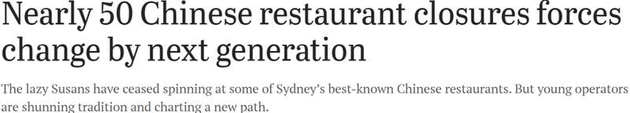
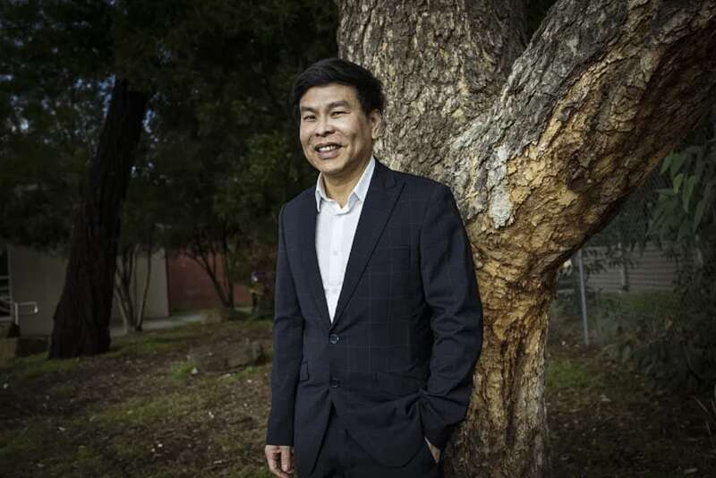
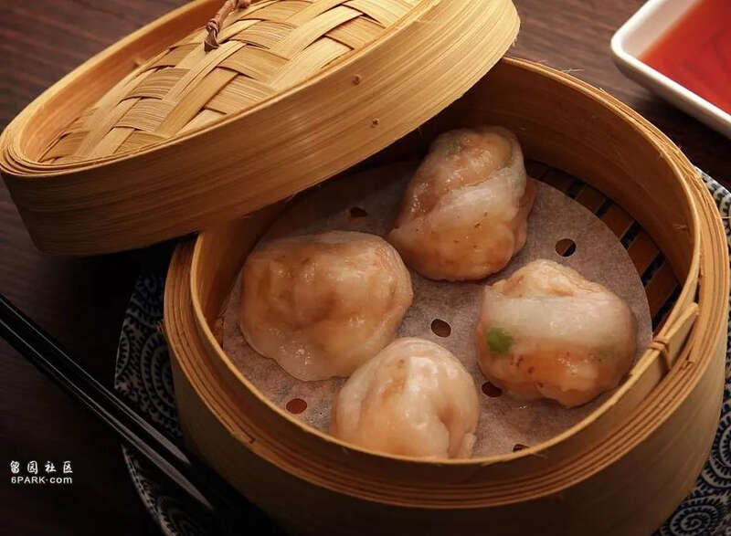
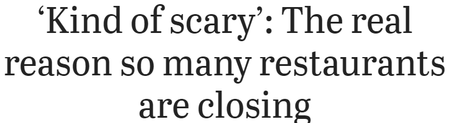
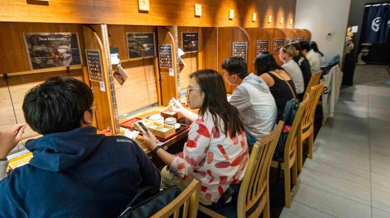
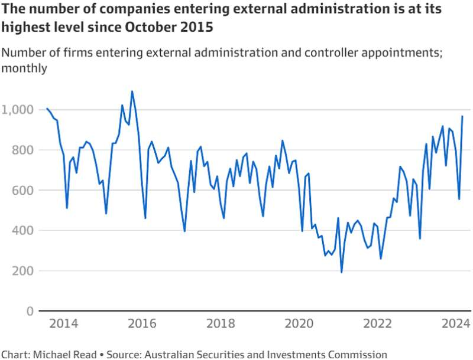

真是没有想到，
短短18个月内，
悉尼近50家中餐馆关门停业！
有业内人士表示，
现代中餐厅人工成本高，
运营成本和租金上涨等因素，
都是中餐厅难以为继的原因。
就在前段时间，
悉尼知名中餐厅停业，
老板称，经济形势太严峻了。
根据澳媒消息，
“破产潮”席卷澳洲，
餐饮业首当其冲…
01
短短18个月内，悉尼近50家中餐馆关门停业
《悉尼晨锋报》8月5日报道称，华人区总商会主席曾伟煌（Wayne Tseng）表示，在过去18个月内，悉尼有近50家中餐馆关张。

曾伟煌表示：“自2023年2月以来，已有49家餐厅要么关门，要么改变了经营模式。”
关闭的中餐馆包括位于Chatswood的唐宴（King Dynasty）、Eastwood的潮港餐厅（Chao Kong Chinese Restaurant），以及1980年在Casula开业的海天酒家（Chan’s Canton Village）。

Wayne Tseng（图片来源：《悉尼晨锋报》）
此外，还有多家知名中餐厅也相继关张或改变经营模式，其中就包括获得《Good Food Guide》评级，位于Redfern的Redbird、Double Bay的China Diner、Crown的高档中餐厅Silks，以及Lotus将其Double Bay门店转为仅提供外卖。
曾伟煌表示，澳洲传统中餐馆面临的问题之一，是许多餐馆最初赖以成功的商业模式：家庭餐厅的低人工成本。
低人工成本使菜单价格和运营保持稳定——这是现代中餐厅所不具备的财务优势。
现如今，中餐馆需要在遵守各项法规、维护员工权益、且运营成本和租金上涨的环境下运营。
新冠的到来进一步影响了中餐馆的生意，悉尼唐人街的餐饮行业经历了一段艰难时期。
2020年8月，拥有40年历史的德记烧腊（BBQ King）关门。一年后，经营39年之久的富丽宫酒楼（Marigold）也宣布关闭，主要原因是疫情。
此外，开业了32年的金唐海鲜酒家（Golden Century）也进入自愿管理程序。
去年，在Haymarket经营了30多年的同乐轩（Zilver）也关门大吉，其所在的建筑将被重新开发。
不过，曾伟煌对餐厅经营者的适应能力充满信心。
“中端市场的餐厅正变得越来越聪明，它们减少了菜单上的菜品数量。每个行业都必须进化，有时这意味着摆脱旧模式的束缚。”
Yum Cha Project就是这样一家餐厅，将于8月8日在悉尼CBD的Grosvenor Place开业。
（图片来源：SMH）
为了将自己与更传统的中餐馆区分开来，它将使用披萨和汉堡盒包装外卖饺子，还将提供北京烤鸭披萨作为配菜。
餐厅老板Howin Chui表示：“我不希望这只是另一家豪华的悉尼中餐馆，我想像Guzman y Gomez那样，成为在国内外发展的澳洲品牌。”
02
澳知名中餐厅停业，老板：都怪经济形势太严峻
许多华人来到澳洲，想念家乡的美食，只能找当地的中餐厅解馋。
而最近大批中餐厅陷入“倒闭潮”，想吃到熟悉的味道这一愿望似乎变得越来越难。
《每日电讯报》7月30日报道，悉尼Double Bay的知名中餐馆之一，China Diner已经不再营业。
与此同时，2020年在TheIntercontinental Hotel地下零售区开业的高档餐厅Lotus不再开放堂食，仅提供外卖。
Contemporary China Diner始于Bondi，6年前在Double Bay开了分店，自那以来一直备受欢迎。
然而，老板Kingsley Smith向Kitchen Confidential透露，他们决定不再续签租约，因为“该地区没有得到很好的发展”。
Smith还在Bondi和Tramsheds Forest Lodge经营餐馆，并正在东区寻找适合开新店的位置。
(图片来源:《每日电讯报》)
Lotus则在其官网上表示，之所以会做出只提供外卖的决定，是因为当前经济形势严峻。
该餐厅表示：“目前的经济形势对餐饮业来说充满挑战，我们不得不做出一个令人难过的决定，关闭Lotus Double Bay门店的堂食服务。”
就在两年前，在该地经营了50年的Double Bay Chinese Restaurant宣布关门歇业。
现在，Double Bay只剩一家中餐馆了，那就是Neil Perry的Song Bird。这家餐馆耗资1200万澳元，名厨Neil Perry已经透露了开业日期。

(图片来源:《每日电讯报》)
这家店位于Gaden House内，距离他的Margaret餐馆仅几米远。
Song Bird将于8月30日周五开业，并已开放预订。虽然Perry还没有公布菜单，但开业首周的桌位已被订购一空，接下来的一周也只有深夜用餐的桌位。
该餐馆在其官网上写道:“跨越3个楼层的高档美食体验，将传统粤菜与Perry的现代澳洲风味完美结合。”
03
“破产潮”席卷澳洲，餐饮业首当其冲
据《悉尼晨锋报》报道称，由于成本上涨和食客支出减少，澳洲餐饮业正面临着“寒潮”。

预计未来12个月内，在澳洲各地的餐饮企业中，每13家就有1家面临倒闭的风险。

不久前，澳洲证券投资委员会（ASIC）也公布了一份最新数据：
澳洲企业倒闭数量已飙升至10年来的最高水平，建筑和餐饮行业已成为“重灾区”，正在法院申请倒闭程序的企业已经“排起了长龙”…
报告显示，从2023年7月初到2024年3月末的9个月里，澳洲一共有7747家公司进入接管，比此前同期增长了36.2%。

其中，餐饮行业占15.2%，建筑行业占27.7%，是这波倒闭潮中的重灾区！
《澳洲金融评论》报道称，破产企业数量大幅增长，主要受借贷成本上升、消费者支出疲软以及税务局更加激进的政策等因素影响。
今日结语
短短18个月内，
悉尼近50家中餐馆关门停业，
可想而知，
当前的餐饮业一片哀嚎。
希望澳政府出台扶持政策，
众多华人商家克服经营困境，
找到继续经营下去的办法。
对此，你有什么看法呢？
欢迎留言分享。